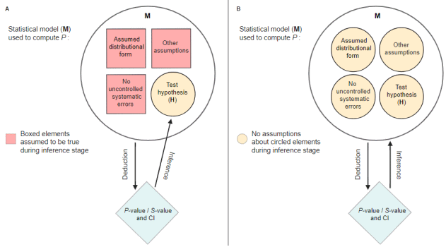

| p_function {parameters} | R Documentation |
Compute p-values and compatibility (confidence) intervals for
statistical models, at different levels. This function is also called
consonance function. It allows to see which estimates are compatible with
the model at various compatibility levels. Use plot() to generate plots
of the p resp. consonance function and compatibility intervals at
different levels.
p_function(
model,
ci_levels = c(0.25, 0.5, 0.75, emph = 0.95),
exponentiate = FALSE,
effects = "fixed",
component = "all",
vcov = NULL,
vcov_args = NULL,
keep = NULL,
drop = NULL,
verbose = TRUE,
...
)
consonance_function(
model,
ci_levels = c(0.25, 0.5, 0.75, emph = 0.95),
exponentiate = FALSE,
effects = "fixed",
component = "all",
vcov = NULL,
vcov_args = NULL,
keep = NULL,
drop = NULL,
verbose = TRUE,
...
)
confidence_curve(
model,
ci_levels = c(0.25, 0.5, 0.75, emph = 0.95),
exponentiate = FALSE,
effects = "fixed",
component = "all",
vcov = NULL,
vcov_args = NULL,
keep = NULL,
drop = NULL,
verbose = TRUE,
...
)
## S3 method for class 'parameters_p_function'
format(
x,
digits = 2,
format = NULL,
ci_width = NULL,
ci_brackets = TRUE,
pretty_names = TRUE,
...
)
## S3 method for class 'parameters_p_function'
print(
x,
digits = 2,
ci_width = "auto",
ci_brackets = TRUE,
pretty_names = TRUE,
...
)
## S3 method for class 'parameters_p_function'
print_html(
x,
digits = 2,
ci_width = "auto",
ci_brackets = c("(", ")"),
pretty_names = TRUE,
...
)
model |
Statistical Model. |
ci_levels |
Vector of scalars, indicating the different levels at which
compatibility intervals should be printed or plotted. In plots, these levels
are highlighted by vertical lines. It is possible to increase thickness for
one or more of these lines by providing a names vector, where the to be
highlighted values should be named |
exponentiate |
Logical, indicating whether or not to exponentiate the
coefficients (and related confidence intervals). This is typical for
logistic regression, or more generally speaking, for models with log or
logit links. It is also recommended to use |
effects |
Should parameters for fixed effects ( |
component |
Which type of parameters to return, such as parameters for the
conditional model, the zero-inflation part of the model, the dispersion
term, or other auxiliary parameters be returned? Applies to models with
zero-inflation and/or dispersion formula, or if parameters such as |
vcov |
Variance-covariance matrix used to compute uncertainty estimates (e.g., for robust standard errors). This argument accepts a covariance matrix, a function which returns a covariance matrix, or a string which identifies the function to be used to compute the covariance matrix.
|
vcov_args |
List of arguments to be passed to the function identified by
the |
keep |
Character containing a regular expression pattern that
describes the parameters that should be included (for |
drop |
See |
verbose |
Toggle warnings and messages. |
... |
Arguments passed to or from other methods. Non-documented arguments are
|
x |
An object returned by |
digits |
Number of digits for rounding or significant figures. May also
be |
format |
Name of output-format, as string. If |
ci_width |
Minimum width of the returned string for confidence
intervals. If not |
ci_brackets |
Logical, if |
pretty_names |
Can be |
p_function() only returns the compatibility interval estimates, not the
related p-values. The reason for this is because the p-value for a
given estimate value is just 1 - CI_level. The values indicating the lower
and upper limits of the intervals are the related estimates associated with
the p-value. E.g., if a parameter x has a 75% compatibility interval
of (0.81, 1.05), then the p-value for the estimate value of 0.81
would be 1 - 0.75, which is 0.25. This relationship is more intuitive and
better to understand when looking at the plots (using plot()).
p_function(), and in particular its plot() method, aims at re-interpreting
p-values and confidence intervals (better named: compatibility intervals)
in unconditional terms. Instead of referring to the long-term property and
repeated trials when interpreting interval estimates (so-called "aleatory
probability", Schweder 2018), and assuming that all underlying assumptions
are correct and met, p_function() interprets p-values in a Fisherian way
as "continuous measure of evidence against the very test hypothesis and
entire model (all assumptions) used to compute it"
(P-Values Are Tough and S-Values Can Help, lesslikely.com/statistics/s-values;
see also Amrhein and Greenland 2022).
The common definition of p-values can be considered as "conditional" interpretation:
The p-value is the probability of obtaining test results at least as extreme as the result actually observed, under the assumption that the null hypothesis is correct (Wikipedia).
However, this definition or interpretation is inadequate because it only refers to the test hypothesis (often the null hypothesis), which is only one component of the entire model that is being tested. Thus, Greenland et al. 2022 suggest an "unconditional" interpretation.
This interpretation as a continuous measure of evidence against the test hypothesis and the entire model used to compute it can be seen in the figure below (taken from P-Values Are Tough and S-Values Can Help, lesslikely.com/statistics/s-values). The "conditional" interpretation of p-values and interval estimates (A) implicitly assumes certain assumptions to be true, thus the interpretation is "conditioned" on these assumptions (i.e. assumptions are taken as given, only the hypothesis is tested). The unconditional interpretation (B), however, questions all these assumptions.
A non-significant p-value could occur because the test hypothesis is false, but could also be the result of any of the model assumptions being incorrect.

"Emphasizing unconditional interpretations helps avoid overconfident and misleading inferences in light of uncertainties about the assumptions used to arrive at the statistical results." (Greenland et al. 2022).
Note: The term "conditional" as used by Rafi and Greenland probably has a slightly different meaning than normally. "Conditional" in this notion means that all model assumptions are taken as given - it should not be confused with terms like "conditional probability". See also Greenland et al. 2022 for a detailed elaboration on this issue.
In other words, the term compatibility interval emphasizes "the dependence of the p-value on the assumptions as well as on the data, recognizing that p<0.05 can arise from assumption violations even if the effect under study is null" (Gelman/Greenland 2019).
Schweder (2018) resp. Schweder and Hjort (2016) (and others) argue that
confidence curves (as produced by p_function()) have a valid probabilistic
interpretation. They distinguish between aleatory probability, which
describes the aleatory stochastic element of a distribution ex ante, i.e.
before the data are obtained. This is the classical interpretation of
confidence intervals following the Neyman-Pearson school of statistics.
However, there is also an ex post probability, called epistemic probability,
for confidence curves. The shift in terminology from confidence intervals
to compatibility intervals may help emphasizing this interpretation.
In this sense, the probabilistic interpretation of p-values and compatibility intervals is "conditional" - on the data and model assumptions (which is in line with the "unconditional" interpretation in the sense of Rafi and Greenland).
Ascribing a probabilistic interpretation to one realized confidence interval is possible without repeated sampling of the specific experiment. Important is the assumption that a sampling distribution is a good description of the variability of the parameter (Vos and Holbert 2022). At the core, the interpretation of a confidence interval is "I assume that this sampling distribution is a good description of the uncertainty of the parameter. If that's a good assumption, then the values in this interval are the most plausible or compatible with the data". The source of confidence in probability statements is the assumption that the selected sampling distribution is appropriate.
"The realized confidence distribution is clearly an epistemic probability distribution" (Schweder 2018). In Bayesian words, compatibility intervals (or confidence distributons, or consonance curves) are "posteriors without priors" (Schweder, Hjort, 2003).
The p-value indicates the degree of compatibility of the endpoints of the
interval at a given confidence level with (1) the observed data and (2) model
assumptions. The observed point estimate (p-value = 1) is the value
estimated to be most compatible with the data and model assumptions,
whereas values values far from the observed point estimate (where p
approaches 0) are least compatible with the data and model assumptions
(Schweder and Hjort 2016, pp. 60-61; Amrhein and Greenland 2022). In this
regards, p-values are statements about confidence or compatibility:
The p-value is not an absolute measure of evidence for a model (such as the
null/alternative model), it is a continuous measure of the compatibility of
the observed data with the model used to compute it (Greenland et al. 2016,
Greenland 2023). Going one step further, and following Schweder, p-values
can be considered as epistemic probability - "not necessarily of the
hypothesis being true, but of it possibly being true" (Schweder 2018).
Hence, the interpretation of p-values might be guided using
bayestestR::p_to_pd().
We here presented the discussion of p-values and confidence intervals from the perspective of two paradigms, one saying that probability statements can be made, one saying that interpretation is guided in terms of "compatibility". Cox and Hinkley say, "interval estimates cannot be taken as probability statements" (Cox and Hinkley 1979: 208), which conflicts with the Schweder and Hjort confidence distribution school. However, if you view interval estimates as being intervals of values being consistent with the data, this comes close to the idea of (epistemic) probability. We do not believe that these two paradigms contradict or exclude each other. Rather, the aim is to emphasize the one point of view or the other, i.e. to place the linguistic nuances either on 'compatibility' or 'probability'.
The main take-away is not to interpret p-values as dichotomous decisions that distinguish between "we found an effect" (statistically significant)" vs. "we found no effect" (statistically not significant) (Altman and Bland 1995).
The fact that the term "conditional" is used in different meanings in statistics, is confusing. Thus, we would summarize the (probabilistic) interpretation of compatibility intervals as follows: The intervals are built from the data and our modeling assumptions. The accuracy of the intervals depends on our model assumptions. If a value is outside the interval, that might be because (1) that parameter value isn't supported by the data, or (2) the modeling assumptions are a poor fit for the situation. When we make bad assumptions, the compatibility interval might be too wide or (more commonly and seriously) too narrow, making us think we know more about the parameter than is warranted.
When we say "there is a 95% chance the true value is in the interval", that is a statement of epistemic probability (i.e. description of uncertainty related to our knowledge or belief). When we talk about repeated samples or sampling distributions, that is referring to aleatoric (physical properties) probability. Frequentist inference is built on defining estimators with known aleatoric probability properties, from which we can draw epistemic probabilistic statements of uncertainty (Schweder and Hjort 2016).
The parameters package provides several options or functions to aid
statistical inference. Beyond p_function(), there are, for example:
equivalence_test(), to compute the (conditional)
equivalence test for frequentist models
p_significance(), to compute the probability of
practical significance, which can be conceptualized as a unidirectional
equivalence test
the pd argument (setting pd = TRUE) in model_parameters() includes
a column with the probability of direction, i.e. the probability that a
parameter is strictly positive or negative. See bayestestR::p_direction()
for details. If plotting is desired, the p_direction()
function can be used, together with plot().
the s_value argument (setting s_value = TRUE) in model_parameters()
replaces the p-values with their related S-values (Rafi and Greenland 2020)
finally, it is possible to generate distributions of model coefficients by
generating bootstrap-samples (setting bootstrap = TRUE) or simulating
draws from model coefficients using simulate_model(). These samples
can then be treated as "posterior samples" and used in many functions from
the bayestestR package.
A data frame with p-values and compatibility intervals.
Curently, p_function() computes intervals based on Wald t- or z-statistic.
For certain models (like mixed models), profiled intervals may be more
accurate, however, this is currently not supported.
Altman DG, Bland JM. Absence of evidence is not evidence of absence. BMJ. 1995;311(7003):485. doi: 10.1136/bmj.311.7003.485
Amrhein V, Greenland S. Discuss practical importance of results based on interval estimates and p-value functions, not only on point estimates and null p-values. Journal of Information Technology 2022;37:316–20. doi: 10.1177/02683962221105904
Cox DR, Hinkley DV. 1979. Theoretical Statistics. 6th edition. Chapman and Hall/CRC
Fraser DAS. The P-value function and statistical inference. The American Statistician. 2019;73(sup1):135-147. doi: 10.1080/00031305.2018.1556735
Gelman A, Greenland S. Are confidence intervals better termed "uncertainty intervals"? BMJ (2019)l5381. doi: 10.1136/bmj.l5381
Greenland S, Rafi Z, Matthews R, Higgs M. To Aid Scientific Inference, Emphasize Unconditional Compatibility Descriptions of Statistics. (2022) https://arxiv.org/abs/1909.08583v7 (Accessed November 10, 2022)
Greenland S, Senn SJ, Rothman KJ, Carlin JB, Poole C, Goodman SN, et al. (2016). Statistical tests, P values, confidence intervals, and power: A guide to misinterpretations. European Journal of Epidemiology. 31:337-350. doi: 10.1007/s10654-016-0149-3
Greenland S (2023). Divergence versus decision P-values: A distinction worth making in theory and keeping in practice: Or, how divergence P-values measure evidence even when decision P-values do not. Scand J Statist, 50(1), 54-88.
Rafi Z, Greenland S. Semantic and cognitive tools to aid statistical science: Replace confidence and significance by compatibility and surprise. BMC Medical Research Methodology. 2020;20(1):244. doi: 10.1186/s12874-020-01105-9
Schweder T. Confidence is epistemic probability for empirical science. Journal of Statistical Planning and Inference (2018) 195:116–125. doi: 10.1016/j.jspi.2017.09.016
Schweder T, Hjort NL. Confidence and Likelihood. Scandinavian Journal of Statistics. 2002;29(2):309-332. doi: 10.1111/1467-9469.00285
Schweder T, Hjort NL. Frequentist analogues of priors and posteriors. In Stigum, B. (ed.), Econometrics and the Philosophy of Economics: Theory Data Confrontation in Economics, pp. 285-217. Princeton University Press, Princeton, NJ, 2003
Schweder T, Hjort NL. Confidence, Likelihood, Probability: Statistical inference with confidence distributions. Cambridge University Press, 2016.
Vos P, Holbert D. Frequentist statistical inference without repeated sampling. Synthese 200, 89 (2022). doi: 10.1007/s11229-022-03560-x
See also equivalence_test() and p_significance() for
functions related to checking effect existence and significance.
model <- lm(Sepal.Length ~ Species, data = iris) p_function(model) model <- lm(mpg ~ wt + as.factor(gear) + am, data = mtcars) result <- p_function(model) # single panels plot(result, n_columns = 2) # integrated plot, the default plot(result)